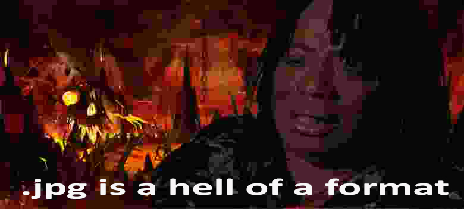

Meme Mashup/Crossover Art Series: Super Pablo Escobar(above) and .jpg is a Hell of a Format (below)
The work "Super Pablo Escobar" is a statement saying that companies will make media about anything that is sensational. I'm surprised I haven't seen any Narcos games yet since it is an incredibly popular show. But the video game companies are not immune to cheap and easy money grabs and they never have been. This work was created using Adobe Photoshop. The second work ".jpg is a Hell of a Format" was created using a template of the image and then I used Photoshop to put writing over it and a background of Hell behind it. Then I put the who thing into a web program that horribly compresses images as a statement about the format, .jpg.